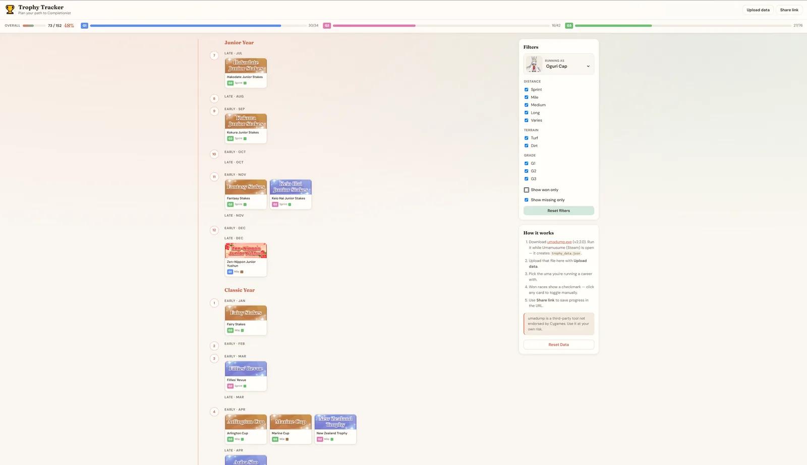

Race replays
Hakuraku
Open a supported replay to inspect the field, skills, build, and race data.
Umadump
umadump reads available game data and writes JSON files for compatible community tools. Run it once for a snapshot, or leave daemon mode open to update files while you play.
Use it with a live game or a prepared minidump.
Community tools
These are a few community projects that can make use of umadump exports.
Race replays
Open a supported replay to inspect the field, skills, build, and race data.
Veterans
Browse trained Uma and use the lineage planner to explore inheritance.
Collection
Import character cards and supports, then see what is still missing.
Trophies
Turn trophy progress into a race calendar and see what is left to complete.

Career exports: Independent Training (Idle Mode) is available. Other career support is still in progress.
Interface previews are included for orientation. Their names and interfaces belong to their respective projects.
Quick start
Put the latest release in the folder where you want output files.
Open Uma, then start umadump.exe.
For a snapshot, let the first pass finish. To keep exports happening continuously in the background, type d at the prompt and leave the console open.
Files are written relative to where you started umadump. Open a compatible export in the community tool you want to use.